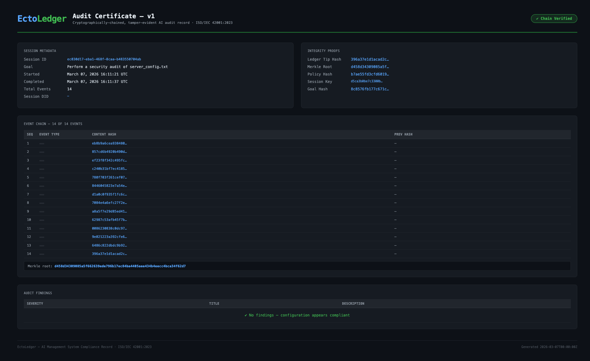

Core Ledger
Hash-linked event integrity with replayable lineage
Capture every model invocation, tool action, and operator decision in a cryptographically chained timeline designed for deterministic review.

Tamper-evident, policy-enforced, compliance-ready. Every action is hash-chained, signature-verified, and policy-gated before execution. A sovereign audit trail regulators and security teams can inspect and verify.

The Solution
Core Ledger
Capture every model invocation, tool action, and operator decision in a cryptographically chained timeline designed for deterministic review.
4-layer semantic guard
Policy engine → dual-LLM guard → strict schema validation → Tripwire (paths, domains, commands, justification). No action is trusted until it passes all layers.

.elc audit certificates
Ed25519 signature, SHA-256 hash chain, Merkle inclusion proofs, OpenTimestamps/Bitcoin or EVM anchor, goal hash integrity. Optional SP1 ZK proof. Standalone verify-cert binary for auditors.

Policy Studio

Metrics

Active Audit

Philosophy
The Rust process is a transient worker. All durable state — event log and snapshots — lives in the configured backend (PostgreSQL or SQLite). The binary has no long-term memory; it restores state from the ledger on each run.
Proposed actions from the LLM are never trusted directly. Policy engine, guard process, then Tripwire validate every intent before commit. Intents that pass are appended to the hash-chained ledger and executed; nothing is ever updated or deleted.
Industry policy packs
SOC 2 Type II, PCI-DSS v4.0, OWASP Top 10 2021, ISO 42001:2023 (AI management). Load via --policy crates/host/policies/soc2-audit.toml and similar.
How It Works
The workflow follows a deterministic progression designed for high-assurance environments.
Step 1
Create a scoped session with explicit mission and policy boundary.
Step 2
Append model and tool events while guardrails validate each operation.
Step 3
Seal the session and export verifiable certificate artifacts.
Execution health

v0.6.2 release
Highlights from v0.6. Full README and CLI reference live on GitHub.
DATABASE_URL; LedgerBackend trait for custom stores.did:key: anchored.run_command (Linux).anchor-session --chain ethereum.verify-cert binary.Developers
Zero-friction setup: launcher scripts for macOS/Linux/Windows, Docker demo, or SQLite for local dev. Full docs on GitHub.
Clone, run launcher — backend + Tauri GUI. Or ./ectoledger-mac --demo for zero-config demo with embedded Postgres.
./ectoledger-mac./ectoledger-linux.\ectoledger-win.ps1docker compose -f docker-compose.demo.yml upServe dashboard, run audits, export reports and certificates.
serve — Observer dashboard (default http://localhost:3000)audit "<goal>" — Run cognitive loop with policy/guardreport <session_id> --format certificate --output audit.elcverify-certificate audit.elc — Offline .elc verificationorchestrate "<goal>" — Recon → Analysis → Verifyanchor-session <id> — Bitcoin OTS or EVM anchoringred-team --target-session <id> — Adversarial testingprove-audit <id> — SP1 ZK proof (build with --features zk)pip install ectoledger-sdk · Optional: [langchain] or [autogen]. sdk/python
import asyncio; from ectoledger_sdk import LedgerClient; async def main(): async with LedgerClient("http://localhost:3000") as client: session = await client.create_session(goal="Audit Cargo dependencies"); await client.seal_session(session.session_id); asyncio.run(main())npm install ectoledger-sdk · Zero deps, native fetch. sdk/typescript
import { EctoLedgerClient } from "ectoledger-sdk";
const client = new EctoLedgerClient({ baseUrl: "http://localhost:3000" });
const session = await client.createSession("Summarise quarterly report");
await client.appendEvent(session.id, { step: "retrieved_docs", count: 42 });
await client.sealSession(session.id);
const cert = await client.exportCertificate(session.id);Audit certificates (.elc)
Every completed session can be exported as a self-contained .elc verifiable offline. Optional sixth: SP1 ZK validity proof. The verify-cert binary is static and dependency-free for auditors.
Tamper-resistance; payload signed with session keypair; no trusted third party.
Gap and mutation detection; any insertion or change is detectable offline.
Efficient finding spot-checks; O(log n) verification per finding.
Temporal non-repudiation; proves completion before block N.
Session integrity; goal cannot be redirected mid-session.